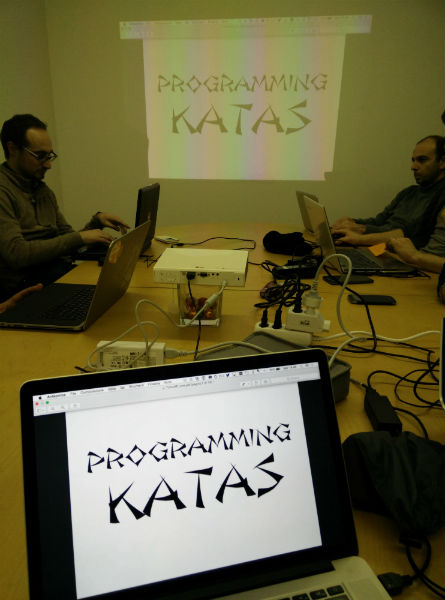
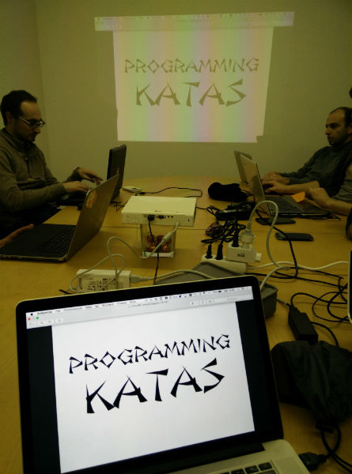

Ci siamo incontrati, ospiti di Roberto Giardina nella sede di TheDots.ch
Armati di tastiera, in pairing e guidati da Gian Carlo Pace, abbiamo risolto il Code Kata Capoccione, in C#, applicando Test-Driven Development.
Gian Carlo Pace ha aperto l'incontro con una presentazione molto efficace, usando le slide di Gabriele Lana
 
